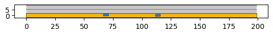
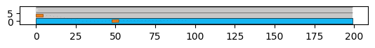
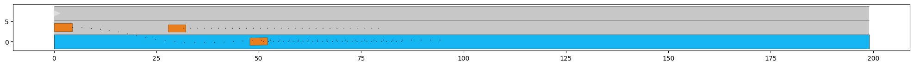
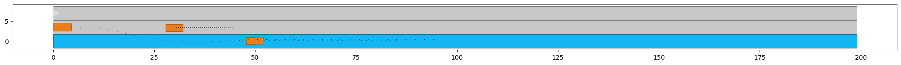

Table of Contents
language as glue layer between low-level perception and high-level decision
Overall architecture
flowchart TD
Sensor--> ADSW[Classic AD Perception SW stack] -->|code instruction|Prompt[Prompt Template]
Sensor--> E2EMM[Visual Langue Model]:::NN
Sensor--> E2EMMF[Foundational Visual Language Model]:::NN
subgraph NL_as_Interface[Natural Language as interface]
Prompt-->|"`**textual scenario description**`"|LLM:::NN
E2EMM-->|embedding|decoder[Text Decoder]-->|"`**textual scenario description**`"|LLM
LLM-->|"`**formatted textual control instruction**`"|Decoder[Code Adapter]:::NN
E2EMMF-->|"`**formatted textual control instruction**`"|Decoder
end
Decoder-->|"`**code instruction**`"|Planning[Planning&Tracking]-->|"`**Lateral & Longitudinal Control Trajctory**`"|Vehicle[Vehicle Control]
classDef NN fill:#0f0
Option 1: Classic AD and LLM
flowchart TD Sensor--> ADSW[Classic AD Perception SW stack]-->|code instruction|Prompt[Prompt Template] subgraph LLM_Interface[Natural language as Interface] Prompt[Prompt Template]-->|"`**textual scenario description**`"|LLM:::NN-->|"`**formatted textual control instruction**`"|Decoder[Code Adapter]:::NN end Decoder[Code Adapter]:::NN-->|"`**code instruction**`"|Planning[Planning&Tracking]-->|"`**Lateral & Longitudinal Control Trajctory**`"|Vehicle[Vehicle Control] classDef NN fill:#0f0
Scenario 1 Highway lane change ()
option 2 VLM and LLM
flowchart TD
Sensor--> E2EMM[Visual Langue Model]:::NN
subgraph NL_as_Interface[Natural Language as Interface]
Prompt[Prompt Template]-->
E2EMM-->|embedding|decoder[Text Decoder]-->|"`**textual scenario description**`"|LLM:::NN -->|"`**formatted textual control instruction**`"|Decoder[Code Adapter]:::NN
end
Decoder-->|"`**code instruction**`"|Planning[Planning&Tracking]-->|"`**Lateral & Longitudinal Control Trajctory**`"|Vehicle[Vehicle Control]
classDef NN fill:#0f0
Scene analysis from VLM (Image captioning; Prompt), –> LLM chain (extraction + prompt)
Option3 Foundational VLM (GPT4)
flowchart TD
Sensor--> E2EMMF[Foundatinal Visual Language Model]:::NN
subgraph NL_as_Interface[Natural langaue as Interface]
E2EMMF-->|"`**formatted textual control instruction**`"|Decoder[Code Adapter]:::NN
end
Decoder-->|"`**code instruction**`"|Planning[Planning&Tracking]-->|"`**Lateral & Longitudinal Control Trajctory**`"|Vehicle[Vehicle Control]
classDef NN fill:#0f0
Introduction
prior art
issues
not robust
corner cases
long-tail
Solved Problems
traffic rules and regulations as in natural language (small rigid limited rules in the general language repertoire)
common sense based high-level planning
regulation based high-level planning
Implementation
Input from powerful E2E model Image Captioning (Image understanding) like BLIP2/Flamingo vision-and-language pre-training
Prompt Template with limited scenario database (keywords road, traffic light, pedestrian, motorcycle, bicycle, truck, vehicles, crosswalk, sidewalk)
Raw Sensor(Video) data, point cloud
as montioring for validation of decision module on a higher level
as direct decision module
output with Response Schema for easy extraction of parameter (as motion descriptor)
output with dynamic generation of implementation code interpretable language/compiling language (Reward translator = motion descriptor + reward coder)
Innovation
LLM fast for complex scenario
can use ToT, agent
suitable for both classic AD SW stack and End-to-End Neural Network
output parser
Prompt Template
Scenario Database
for each scenario, multiple templates, corresponding traditional system requirements specifications, can even import the SRS for existing documents
Interpretatbility
can output intermediate result, thought process
output parser/eval
Use Cases
Highway Lane Change
- Prompt Template for highway lane change decision
import os import openai from dotenv import load_dotenv from pathlib import Path # Python 3.6+ only import pprint pp = pprint.PrettyPrinter(indent=4) # load_dotenv(verbose=True) env_path = Path('.') / '.env' load_dotenv(dotenv_path=env_path) openai_api_key=os.environ.get('OPENAI_API4_LANGCHAIN') openai.proxy = os.environ.get('HTTP_PROXY') from langchain.llms import OpenAI from langchain import PromptTemplate llm = OpenAI(model_name="text-davinci-003", openai_api_key=openai_api_key) template = """ "You're an experienced safe driver. {objects_on_left_lane}. The front car is {front_car_distance} ahead of me {front_car_speed}. I'm driving {ego_speed}. {condition_of_urgency}, should I change my lane or keep following the front car?" """ prompt1 = PromptTemplate( input_variables=["objects_on_left_lane","front_car_distance", "front_car_speed", "ego_speed", "condition_of_urgency"], template=template, ) pp.pprint(f"prompt1: {prompt1}") #return prompt1 # prompt1
- Prompt Template for code adapter
from langchain.output_parsers import StructuredOutputParser, ResponseSchema from langchain.prompts import ChatPromptTemplate, HumanMessagePromptTemplate from langchain import PromptTemplate response_schemas = [ ResponseSchema(name="lateral_drive_decision", description="This is the drive decision to change or not change the lane, it's value should be either 'change' or 'keep'"), ResponseSchema(name="longitudinal_drive_decision", description="This is the drive decision to accelerate, decelerate, or maintain the speed, its value should be either 'accelerate', 'decelerate', or 'maintain'"), ] output_parser = StructuredOutputParser.from_response_schemas(response_schemas) format_instructions = output_parser.get_format_instructions() template = """ You will be given a string with drive decision from a user with an objective. Extract the lateral and longitudinal drive decision and make sure all the words are spelled correctly. {format_instructions} % USER_OBJECTIVE: {user_objective} % USER INPUT: {user_input} YOUR RESPONSE: """ prompt2 = PromptTemplate( input_variables=["user_objective", "user_input"], partial_variables={"format_instructions": format_instructions}, template=template ) pp.pprint(f"prompt2: {prompt2}")
- S1: following


- Input prompt to the LLM and the LLM output:
final_prompt = prompt1.format(objects_on_left_lane="There are no cars on the left lane and the left lane is clear",front_car_distance='200 meters',front_car_speed='and with the same speed as me', ego_speed='slower than the speed limit', condition_of_urgency='When there is nothing special') pp.pprint(f"Prompt: {final_prompt}") output = llm(final_prompt) pp.pprint(f"llm output: {output}")
- Input prompt to the code adapter (LLM)
promptValue = prompt2.format(user_objective="I am a defensive driver.",user_input=output) pp.pprint(f"prompt: {promptValue}") llm_output=llm(promptValue) pp.pprint(f"llm_output: {llm_output}") control_action = output_parser.parse(llm_output) pp.pprint(f"contorl code: {control_action}")
- Construct the prompt:
- Input prompt to the LLM and the LLM output:
- S2: overtaking


- Input prompt to the LLM
final_prompt = prompt1.format(objects_on_left_lane="There are no cars on the left lane and the left lane is clear",front_car_distance='10 meters',front_car_speed='and with a speed much slower than me and will block my lane', ego_speed='slower than the speed limit', condition_of_urgency='When there is nothing special') pp.pprint(f"prompt: {final_prompt}") output = llm(final_prompt) pp.pprint(f"llm output: {output}")
- Input prompt to the code adapter (LLM)
promptValue = prompt2.format(user_objective="I am comfortable with changing lane.",user_input=output) pp.pprint(f"prompt: {promptValue}") llm_output=llm(promptValue) pp.pprint(f"llm output: {llm_output}") control_action = output_parser.parse(llm_output) pp.pprint(f"control code: {control_action}")
- Input prompt to the LLM
- S3: no lane changing


- Input prompt to the LLM
final_prompt = prompt1.format(objects_on_left_lane="There is one car on the left lane 50 meters behind me with the same speed as me",front_car_distance='closely in front of me',front_car_speed='with a lower speed than me', ego_speed="at the speed limit", condition_of_urgency='When there is nothing special') pp.pprint(f"prompt: {final_prompt}") output = llm(final_prompt) pp.pprint(f"llm output: {output}")
- Input prompt to the code adapter (LLM)
promptValue = prompt2.format(user_objective="I am comfortable with changing lane.",user_input=output) pp.pprint(f"prompt: {promptValue}") llm_output=llm(promptValue) pp.pprint(f"llm output: {llm_output}") control_action = output_parser.parse(llm_output) pp.pprint(f"control code: {control_action}")
- Input prompt to the LLM
- S4: lane changing


- Input prompt to the LLM
final_prompt = prompt1.format(objects_on_left_lane="There is one car on the left lane 250 meters away with a lower speed than me but otherwise the left lane is clear",front_car_distance='in a reducing distance closely',front_car_speed='with a lower speed than me', ego_speed="a little bit slower than the speed limit on the right lane", condition_of_urgency='When there is nothing special') pp.pprint(f"prompt: {final_prompt}") output = llm(final_prompt) pp.pprint(f"llm output: {output}")
- Input prompt to the code adapter (LLM)
promptValue = prompt2.format(user_objective="I want to pass the front vehicle which is slower than me.", user_input=output) pp.pprint(f"prompt: {promptValue}") llm_output=llm(promptValue) pp.pprint(f"llm output: {llm_output}") control_action = output_parser.parse(llm_output) pp.pprint(f"control code: {control_action}")
- Input prompt to the LLM